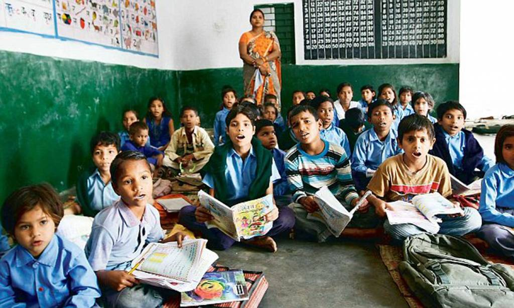
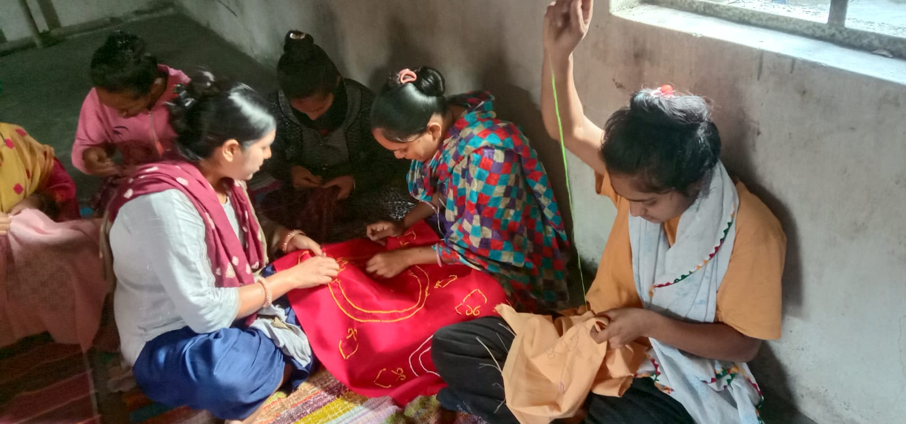
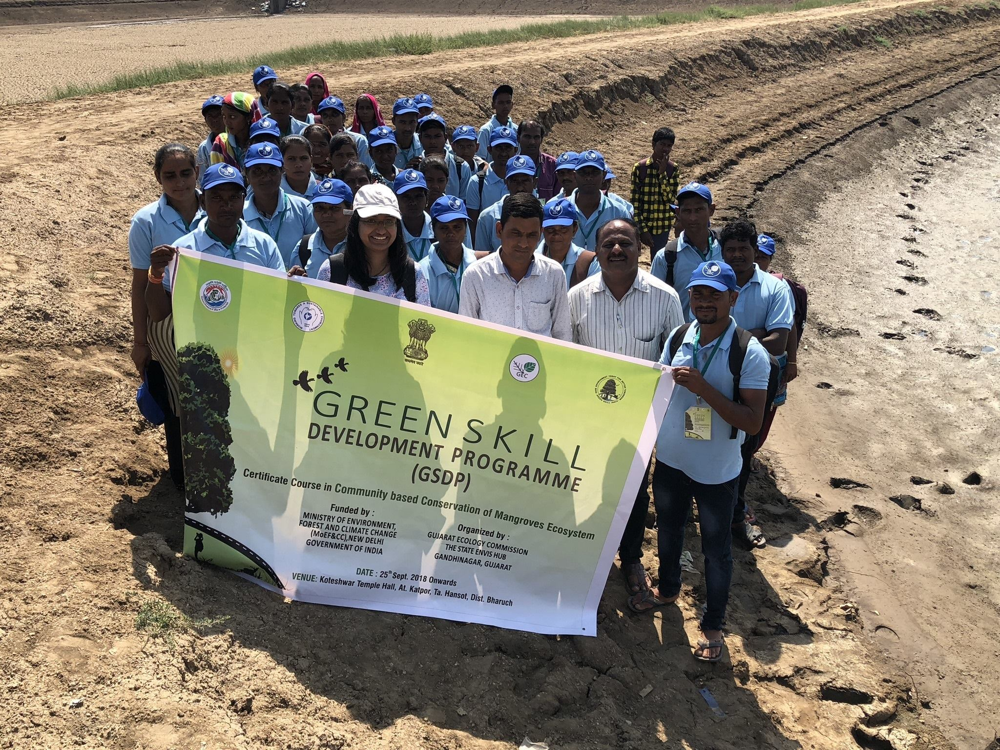
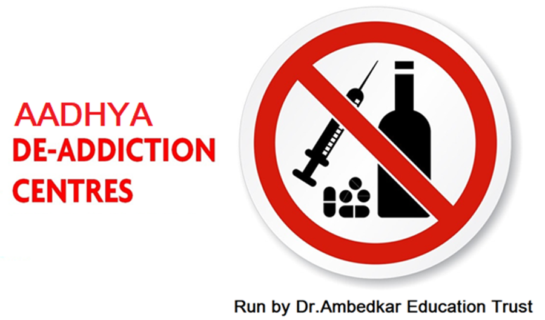

Our Activities
Dr. Ambedkar Education Trust is committed to a variety of activities that empower marginalized communities, promote education, and foster sustainable development. Here are some of the key initiatives we undertake:
1. Educational Programs
Our educational initiatives focus on providing access to quality education for underprivileged children and adults. This includes scholarships, free tuition classes, vocational training, and adult literacy programs aimed at equipping learners with essential skills for personal and professional growth.
2. Vocational Training
We offer vocational training programs that provide practical skills in areas such as handicrafts, tailoring, carpentry, and more. These programs help individuals gain employment or start their own businesses, contributing to economic independence and community resilience.
3. Environmental Initiatives
Our commitment to sustainability is reflected in our environmental programs, which include tree plantation drives, energy conservation workshops, and awareness campaigns on climate change. These initiatives aim to promote eco-friendly practices and protect natural resources.
4. Social Justice Advocacy

We advocate for the rights of marginalized communities by addressing issues such as gender inequality, caste discrimination, and social exclusion. Through our legal aid services, awareness programs, and community outreach, we strive to create a more just and inclusive society.
5. Healthcare and Nutrition
Our healthcare initiatives include organizing medical camps, providing free healthcare services, and running nutrition programs for children and the elderly. These efforts aim to improve the health and well-being of our beneficiaries, ensuring access to essential medical care and a balanced diet.
6. Community Development

We work closely with local communities to identify their needs and implement programs that promote development and self-reliance. This includes building infrastructure, providing clean drinking water, and supporting local governance through capacity-building initiatives.